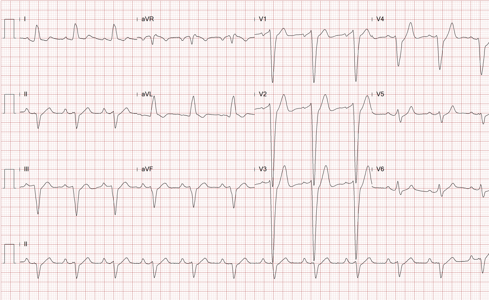

A 45 year-old man with known history of non-ischemic cardiomyopathy presents today for
a routine follow-up visit. He was diagnosed with cardiomyopathy approximately 11 months ago
at which time he underwent an extensive work-up including a left heart catheterization
which revealed angiographically normal coronary arteries.
At the time of his initial presentation 11 months ago, he was in a New York Heart Association
(NYHA) class III heart failure. After adequate diuresis, he was started on carvedilol and lisinopril
and subsequently titrated up to maximum dosages. He has done well over the last several months.
He was previously very active and still feels fatigue and has some mild dyspnea on exertion.
He has no complaints of palpitations or syncope and no prior documentation of ventricular arrhythmias.
His recent 2-D echocardiogram revealed an EF of 30% with moderate global hypokinesis
and mild mitral regurgitation. No pulmonary hypertension was noted.
Today on physical examination, his blood pressure is 100/55 mmHg with a heart rate of 70 bpm.
He does not have jugular venous distention. His lungs are clear to auscultation.
Cardiac examination reveals normal S1 and S2 with a 2/6 holosystolic murmur heard at the apex
and no gallops or rubs. The remainder of the exam is unremarkable. His 12 lead ECG today in the office
is as shown.
Which of the following should be recommended for the next step in management of this patient?

- ICD
- CRT-D
- EP study
- T-wave alternans
- Continue current treatment
Show Answer